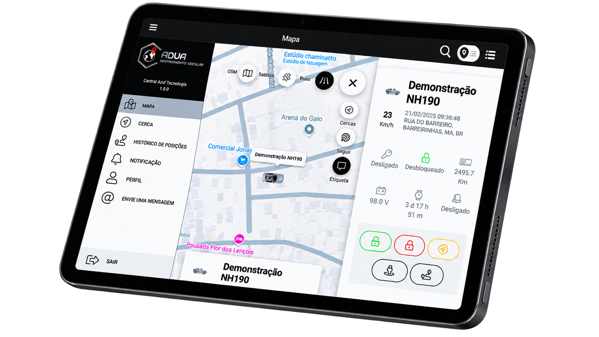
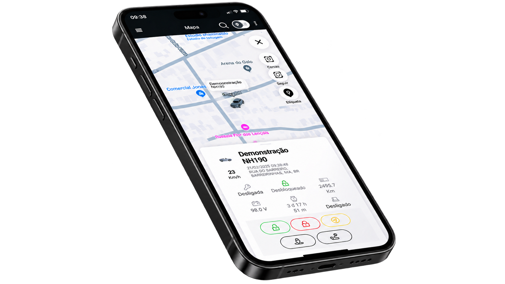
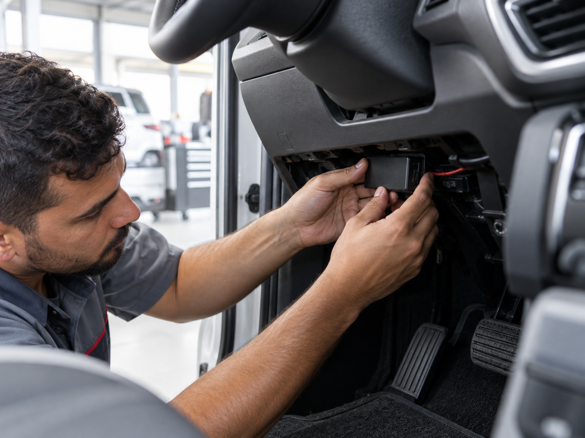

★★★★★
“Equipe muito atenciosa, instalação rápida…”
Acompanhe onde ele está, consulte os trajetos e receba alertas. Tudo pelo celular, com o suporte da ADVA quando precisar.


Experiências compartilhadas por clientes no perfil da ADVA no Google.
Recursos para cuidar do seu veículo e ter as informações certas na mão.
Consulte a posição do veículo pelo computador ou aplicativo.
Acompanhe percursos, velocidade e informações das viagens.
Use cercas eletrônicas e alertas para acompanhar movimentações.
Atendimento 0800 para roubo e furto, disponível 24 horas.
Na rua, em casa ou no trabalho: abra o aplicativo e veja as informações do seu veículo em um só lugar.

Veja seu veículo no aplicativo e conte com o atendimento da ADVA quando precisar.
Conhecer os planosA gente ajuda você a escolher e a colocar tudo para funcionar.
Um carro, uma moto ou uma frota? A equipe entende sua rotina e apresenta as opções.
Compare os recursos de rastreamento e as opções de assistência veicular.
Alinhe com a ADVA os detalhes para instalar o equipamento no veículo.
Acesse a plataforma e conheça os recursos disponíveis para o seu dia a dia.

Do rastreamento à assistência na estrada, encontre a opção para sua rotina.
O essencial para acompanhar seu veículo.
Mais apoio para seguir seu caminho.
Assistência para ir mais longe.
Auxílio por falta de combustível, troca de pneus, chaveiro, hospedagem, motorista substituto, reboque em caso de pane elétrica, assistência em pane mecânica e colisões, remoção hospitalar e retorno ao domicílio. Consulte os limites e as condições de cada serviço com a ADVA.
Reúna as informações da sua frota em uma plataforma e acompanhe o que acontece ao longo do caminho.
Informações para acompanhar as viagens.
Senhas individuais ou por grupo de veículos.
Converse com quem entende do seu rastreamento.
Pergunte pelo WhatsAppVocê acessa a plataforma pelo computador ou utiliza o aplicativo ADVA no celular.
A ADVA oferece cobertura nacional. A equipe pode orientar você sobre o funcionamento na sua região.
Sim. A plataforma atende tanto proprietários de um veículo quanto gestores de frotas.
Sim. O sistema disponibiliza comandos de bloqueio e desbloqueio pelo aplicativo.
Sim. O atendimento para roubo e furto funciona 24h pelo telefone 0800 000 0000.
Com sede em São Paulo, a ADVA oferece soluções de rastreamento para quem quer cuidar do próprio veículo e para empresas que precisam acompanhar suas frotas.
Conte o que precisa. A gente ajuda você a escolher.
Falar com a ADVAAv. Paulista, 1000 · Bela Vista · Seg. a sex., 09h às 18h